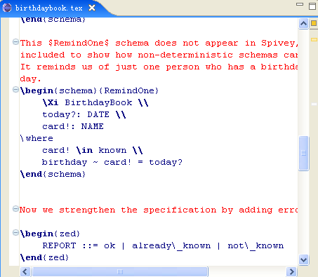

The CZT Editor provides syntax coloring support. The Z elements, such as keywords, operators and narrative paragraphs, are displayed in different colors. The below figure shows a screenshot of the feature.

The users can change the colors and styles of these elements in the Syntax Coloring preference page.